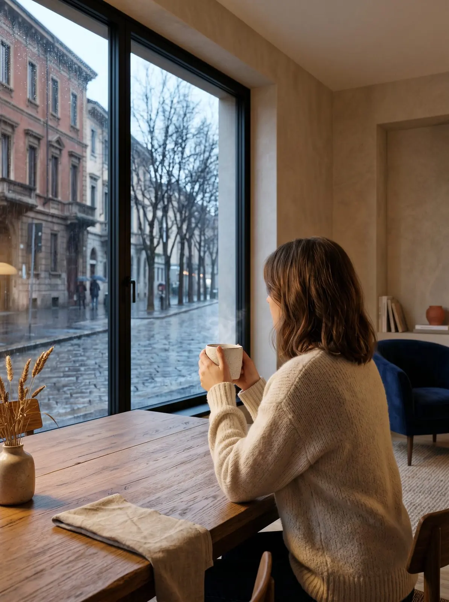

Serramentista a Milano Ovest.
Produciamo e installiamo noi, a pochi chilometri dal tuo quartiere.
Milano Ovest è la parte di città più vicina alla nostra officina: da Gaggiano a Baggio sono circa 12 km, una ventina di minuti. Per il sopralluogo, per la posa e, negli anni, per ogni regolazione.
In quali quartieri lavoriamo?
Baggio, Quarto Cagnino, Quinto Romano, Figino e Muggiano; Forze Armate e Bisceglie; Lorenteggio e Giambellino; San Siro e De Angeli.
Che infissi servono nelle case di Milano Ovest?
Nei condomini degli anni Sessanta e Settanta di Lorenteggio e Bisceglie il problema è quasi sempre lo stesso: finestre che disperdono e cassonetti freddi. Lungo le vie più trafficate, come quelle verso Forze Armate e Bisceglie, conta il vetro acustico. Nelle villette di Figino e Muggiano si lavora spesso su scorrevoli e sicurezza al piano terra.
Tre interventi tipici.
Condominio anni Sessanta
Sostituzione delle finestre con Safe Window, colore della facciata fuori e bianco dentro, cassonetti coibentati.
Appartamento su strada
Vetro acustico stratificato e guarnizioni ad alte prestazioni sulle stanze che danno sul traffico.
Villetta a Figino
Alzante scorrevole sul giardino, persiane blindate e grate al piano terra.
Abbiamo affidato a Centro Infissi Gaggiano la sostituzione di una dozzina di infissi e zanzariere presso la nostra abitazione in zona San Siro e il risultato ha superato le nostre aspettative.Alessandro F. · Recensione Google
Domande da Milano Ovest
In condominio posso cambiare colore agli infissi?
Fate il sopralluogo anche in città?
Quanto dura la posa in un appartamento?
Veniamo a vedere la tua casa a Milano Ovest.
Gratuito e senza impegno. Ti spieghiamo il preventivo voce per voce.